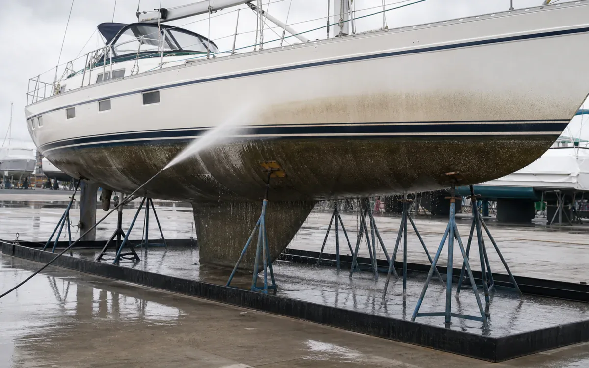
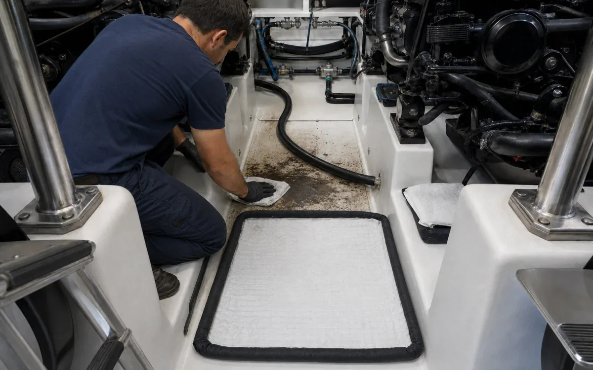

Separate oily-film lift, salt removal, aluminum care, and finish protection.
VertKlean CR HD and MultiWash lift oily film, HCR removes mineral deposits, AlumiBrite targets aluminum oxide, and Torque combines wash with finish care.
- CleanHulls, decks, topsides, bilges, engine-room surfaces, aluminum rails, trailers, dock equipment, and service floors
- RemoveSalt film, algae staining, diesel soot, bilge oil, grease, fish residue, road film, and aluminum oxidation
- MethodFresh-water pre-rinse, targeted wash/degrease or brightening, soft agitation, complete rinse, and recovery
- Operating limitsProtect antifouling and specialty coatings, electrical systems, bilges, zincs, glazing, and adjacent water; follow marina and vessel OEM rules.
- See job fit, process, and results
Why VertKlean fits Marine.
A smaller chemistry kit supports confined-space comfort, finish preservation, and contained wash work.
See VertKlean resultsWhat Marine buyers want from the switch.
Choose chemistry by what must be removed, then benchmark the field result against the incumbent workflow.
Track completed-task economics across labor, rinse and wastewater work, downtime, and return-to-service.
Generated scenes show common tasks. Field photos show VertKlean at work in real applications.




VertKlean products for Marine.
VertKlean options for Marine workflows.
Remove salt, marine film, oil, and oxidation from vessels and dockside assets without releasing an oily wash plume.
Start with what must be cleaned, how the crew works, and what a successful result looks like.
- Task
- Remove salt, marine film, oil, and oxidation from vessels and dockside assets without releasing an oily wash plume.
- Asset / substrate
- Hulls, decks, topsides, bilges, engine-room surfaces, aluminum rails, trailers, dock equipment, and service floors
- Soil / deposit
- Salt film, algae staining, diesel soot, bilge oil, grease, fish residue, road film, and aluminum oxidation
- Starting chemistry
- VertKlean Torque, VertKlean AlumiBrite, VertKlean MultiWash, VertKlean CR HD
- Concentration
- Keep wash and degreaser within current label ranges; establish brightener strength only after an alloy, anodizing, coating, and sealant test.
- Process controls
- Record panel temperature, salinity of rinse water, dilution, dwell, brush/low-pressure action, rinse volume, and dry inspection.
- Shutdown / containment
- Protect antifouling and specialty coatings, electrical systems, bilges, zincs, glazing, and adjacent water; follow marina and vessel OEM rules.
- Success check
- No salt or oily film after dry, no gloss/coating change, clean white-wipe at the test area, and no visible sheen in recovered water.
Marine vessel controlled-trial brief
Plan a witnessed contained-pad vessel trial with documented material compatibility, washwater recovery, and dry-finish acceptance before broader use.
Material fit
| Material | Starting check |
|---|---|
| Gelcoat, painted steel, and specialty coatings | Identify the coating system, age, repairs, condition, and OEM or owner restrictions; approve a hidden-area test before enlarging the trial. |
| Aluminum, stainless steel, and zincs | Record the alloy, anodizing or passivation, and sacrificial-anode locations; isolate zincs and approve chemistry and contact time on a representative test area. |
| Glazing, vinyl, rubber, sealants, and teak | Confirm the exact material, age, and condition; keep teak, electrical systems, and unknown components out of scope unless separately approved. |
Witnessed method
Scope and baseline
Asset / substrate: Hulls, decks, topsides, bilges, engine-room surfaces, aluminum rails, trailers, dock equipment, and service floors. Soil / deposit: Salt film, algae staining, diesel soot, bilge oil, grease, fish residue, road film, and aluminum oxidation. Record current dissatisfaction, operating window, and acceptance endpoint before testing.
Compatibility gate
Materials in scope: Gelcoat, painted steel, aluminum, stainless steel, teak kept out unless approved, vinyl, rubber, glass, and marine sealants. Protect antifouling and specialty coatings, electrical systems, bilges, zincs, glazing, and adjacent water; follow marina and vessel OEM rules.
Witnessed method
Fresh-water pre-rinse, targeted wash/degrease or brightening, soft agitation, complete rinse, and recovery. Keep wash and degreaser within current label ranges; establish brightener strength only after an alloy, anodizing, coating, and sealant test. Record panel temperature, salinity of rinse water, dilution, dwell, brush/low-pressure action, rinse volume, and dry inspection.
Release and record
No salt or oily film after dry, no gloss/coating change, clean white-wipe at the test area, and no visible sheen in recovered water. Use a contained wash pad or mobile recovery; separate oil and solids and never discharge cleaning solution directly to surface water. Record the result and limitations.
Open application records or request the SDS/TDS for your team.
Document IDs, revisions, and exact SKUs stay attached so buyers can move from chemistry fit to the right product file.
Bring us your Marine cleaning task.
The request opens with asset, soil, operating conditions, materials, wastewater route, and buying deadline already prompted.